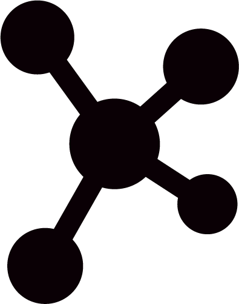
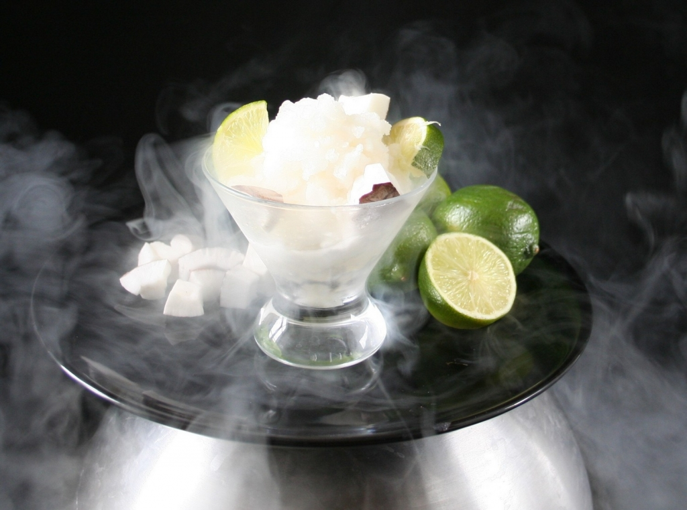

Sorbet au citron à l'azote liquide.
 10 min
10 min- Difficulté : 
- Technique(s) : Cryogénisation
Ingrédients
N
Nitrogen
- 150 mL du sirop de citron
- 150 mL d’azote liquide
- un bécher
- un saladier en inox, un autre en pyrex

Préparation
- Dans un saladier en inox, verser de l’azote liquide.
- Ensuite, prélever les 150 mL d’azote liquide en le versant dans un bécher.
- Transvaser le prélèvement dans un saladier en pyrex dans lequel ont été préalablement versés les 150 mL de sirop.
- Il ne reste plus qu’à mélanger jusqu’à ce que le sorbet prenne et devienne onctueux. Cette onctuosité est dûe à l’absence de gros cristaux.